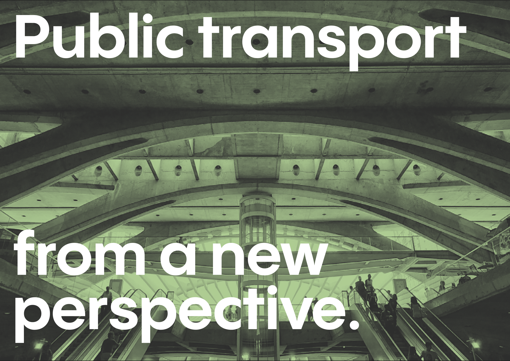
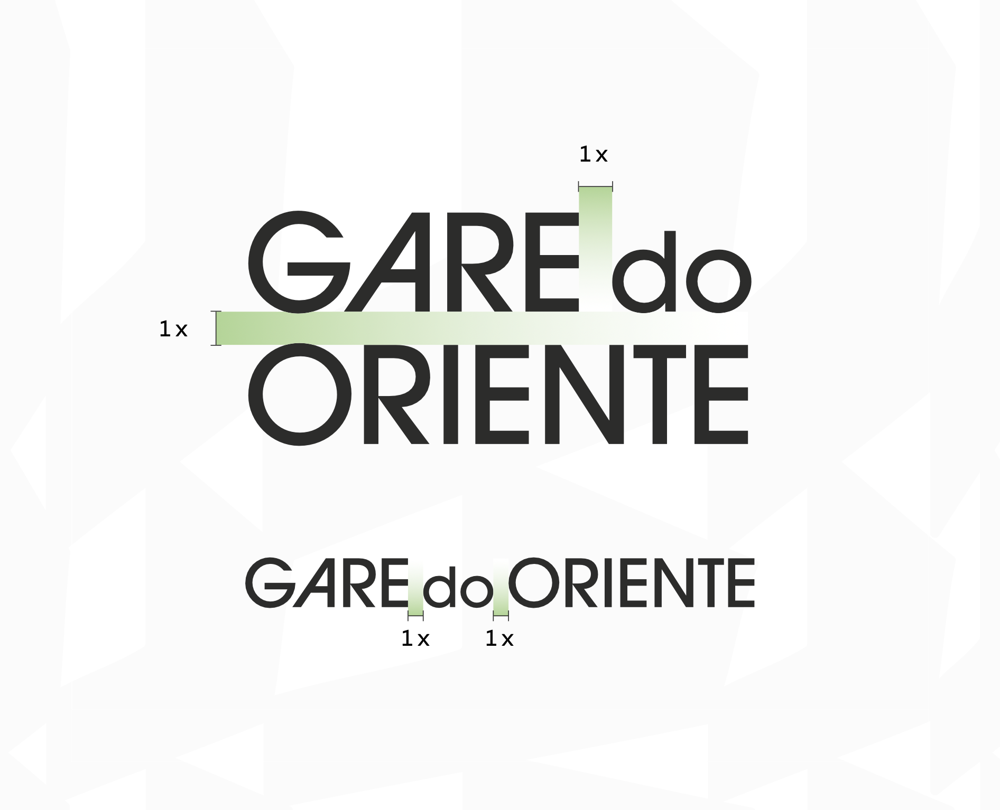
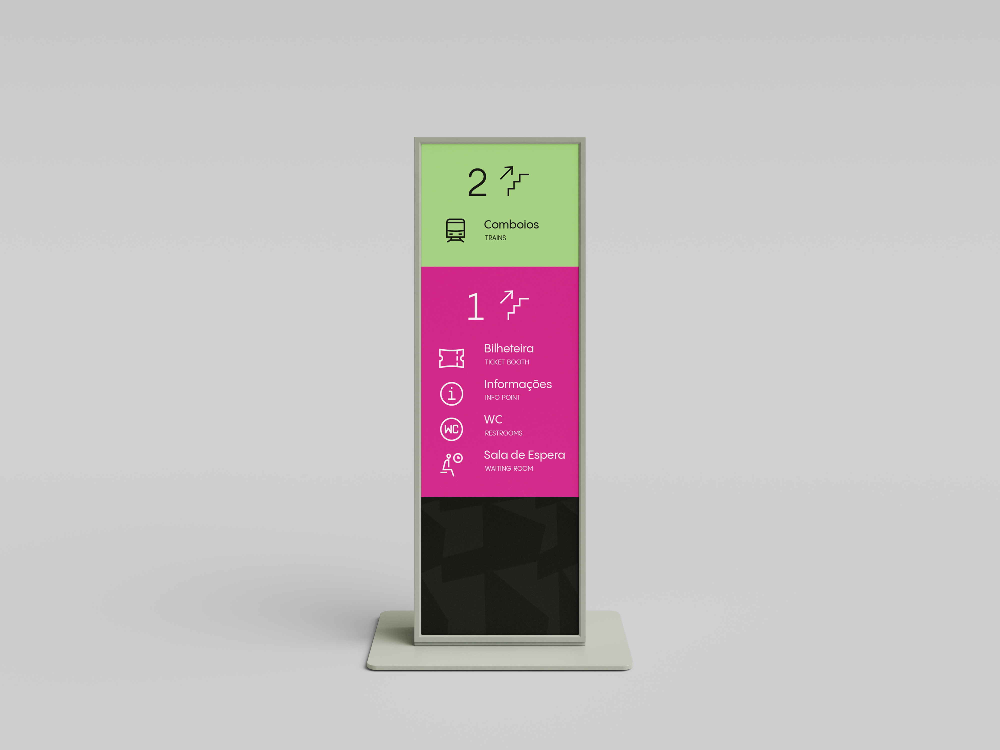
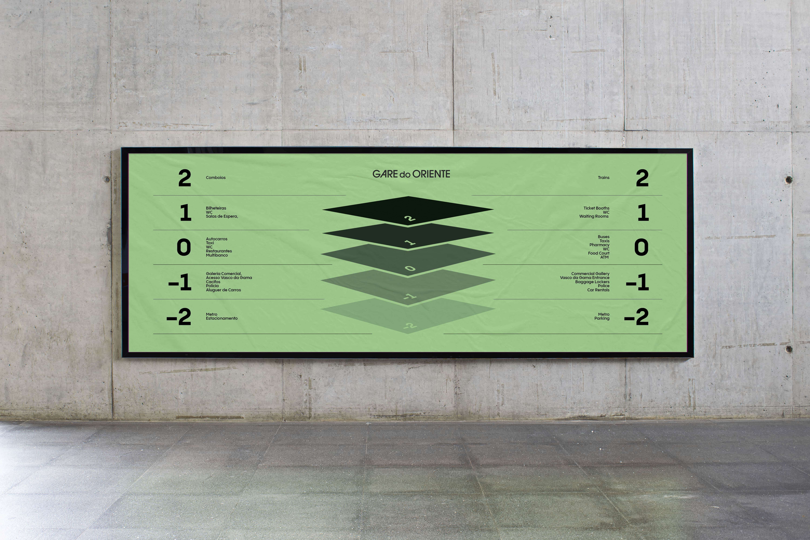

The Challenge
How do you design a wayfinding system for a station that feels more like a sculpture than a place of movement?
Calatrava's Gare do Oriente is monumental, poetic, but difficult. From confusing signage and poorly placed ticket booths to a lack of visual identity, our first visits revealed real navigation challenges.
Our goal: create a user-first identity that restores clarity, builds trust, and turns Gare do Oriente into an intuitive, human-centered transport hub.
Analysis
Discovery
—
Process
This was more than just signage, it required a complete rethink of the station's presence, both physical and digital. We approached it systematically, combining architectural analysis with real user research.
Through multiple site visits, we documented circulation patterns, interviewed commuters and staff, and identified critical pain points in the current wayfinding system. These insights shaped every design decision that followed.

"A better hub, for you."
Brand System
Typography
—
Flexibility
Flexible Brand System
Gare do Oriente's visual identity starts with abstraction: looking at Calatrava's architecture from new angles, finding meaning in form, and grounding it in accessibility.
We created a clean, modern wordmark in two formats (stacked and horizontal), designed to remain legible and consistent at small sizes and complex environments.
We established a palette that balances clarity and energy:


Wayfinding in Context
A visual identity only works if it's tested in the real world. We designed and prototyped signage, iconography, maps, and mobile screens across multiple user touchpoints.
From color-coded ceiling signs to platform identifiers and floor-specific maps, each element follows strict alignment and contrast rules to guarantee clarity.
Site Visits & Interviews
We visited the station multiple times, documenting wayfinding gaps, talking to staff, and measuring key circulation zones.
Component Design
Shapes were extracted from the architecture and aligned to a pixel grid to ensure consistency across digital and physical media.
System Prototyping
We created signage mockups, a digital prototype in Figma, and 3D renders using SketchUp and Enscape to visualize the full system in use.
Refinement & Testing
Typography, colors, and layout grids were optimized based on accessibility, contrast, and placement guidelines.






Mobile App
UX/UI
—
Innovation
Digital Presence: The Gare App
Our app brings you closer to the authentic Lisbon experience: real people, real stories, and sustainable tourism. Through engaging infographics and valuable data, we reveal the challenges of globalization while offering meaningful solutions.
Key Features:
- Insightful Articles: In partnership with local cultural organizations, we share stories that capture Lisbon’s evolving identity.
- Curated Routes by Local Guides: Explore the city through unique routes designed by locals, showcasing hidden gems and diverse perspectives.
- User-Generated Content: Join a community where users share experiences, highlight small businesses, and celebrate Lisbon’s traditions.
- Reward System: Contribute, engage, and earn rewards like train tickets from Gare do Oriente.
- Interactive Transport Map: Easily navigate Lisbon with category filters (restaurants, museums, sites) and tailored public transport directions.
For Everyone
Whether you’re a local rediscovering your city or a visitor exploring for the first time, our app enhances your Lisbon experience and deepens your cultural connection. Join us in celebrating the true spirit of Lisbon.